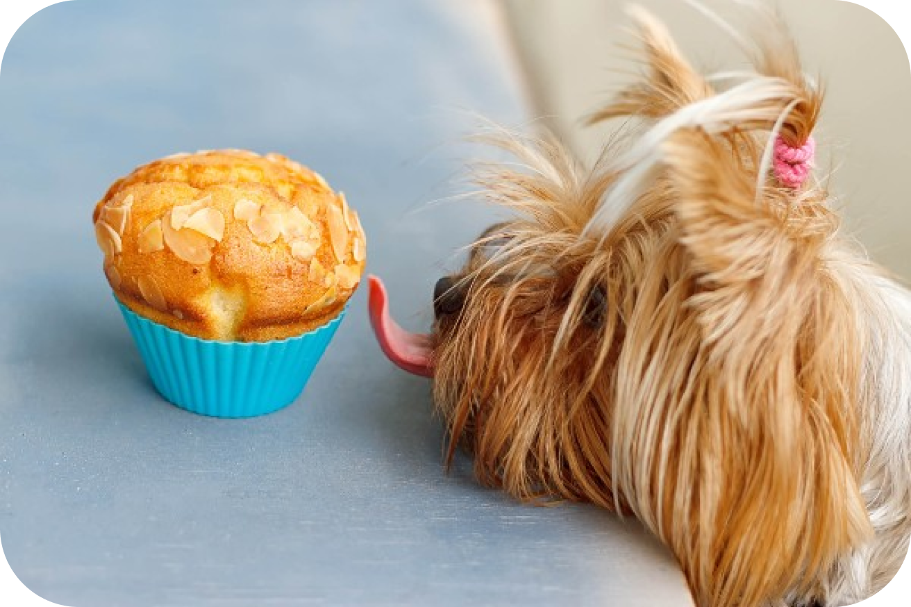

Muffin Salgado Para Cachorros

Ingredientes
* ½ lata de milho cozido.
* 2 ovos.
* 1 colher de sopa de azeite de oliva.
* ½ xícara de farinha de aveia integral.
* 1 colher de chá de de fermento em pó.
* Cenoura ralada.
* Frango cozido a gosto ou patê para cachorro de sua preferência.
* Uma pitada de sal.
Modo de preparo
Bata o milho, os ovos e o azeite no liquidificador até todos os ingredientes ficarem homogêneos.
Coloque a farinha de aveia aos poucos e vá batendo até que tudo esteja misturado.
No copo do liquidificador, coloque o frango ou o patê, a cenoura, o sal, o fermento e mexa com a colher.
Pré-aqueça o forno a 180°.
Para assar o muffin, há algumas opções: use forminhas de silicone com formato redondo, assadeiras para cupcakes ou então você pode colocar toda a massa em uma forma untada e depois cortar no formato que desejar.
Leve ao forno e asse por aproximadamente 30 minutos (vai variar conforme o recipiente que você estiver usando).
Faça o teste do palito e, se sair limpo, está pronto.
Espere esfriar para tirar da forma e coloque em forminhas de papel para bolos